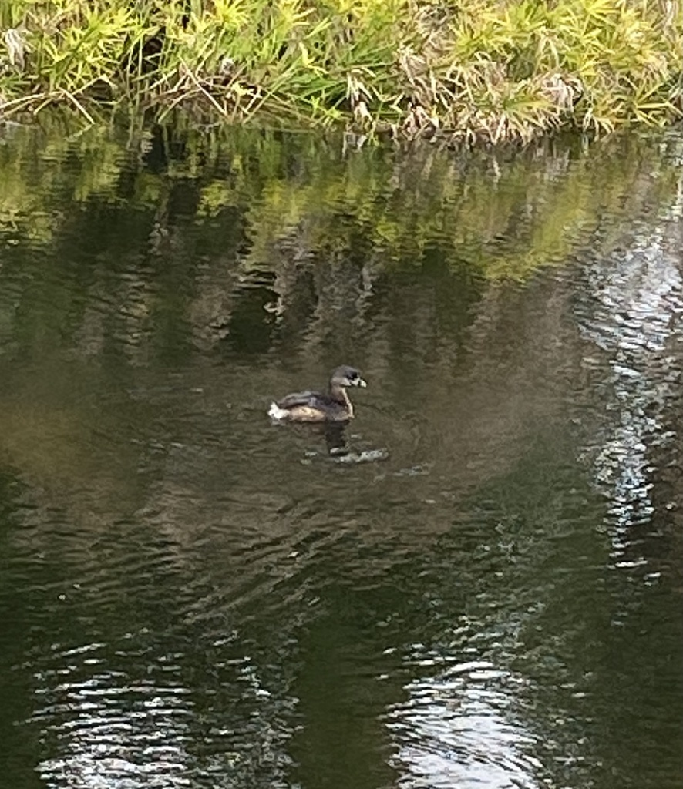

- A small, plump brown waterbird that dives and vanishes the moment you notice it is a pied-billed grebe.
- It would rather sink than fly. By squeezing air from its feathers, it can slip below the surface like a submarine, leaving barely a ripple.
- The short, thick bill gets a black ring around it in the breeding season — the "pied" (two-toned) look that gives the bird its name.
- Its feet are built for diving, not walking: the toes have paddle-like lobes instead of webbing, set far back on a body that is clumsy on land.
Small and stocky, with a short neck and almost no visible tail.
Plain brown overall, paler on the throat.
Short, thick, and pale, with a black vertical ring in breeding season.
Dives constantly and sits low in the water.
Surprisingly loud for its size in the breeding season: a far-carrying series of hollow "kuk-kuk-kuk-cow-cow-cow" calls from marshy cover.
A small brown waterbird riding low on a pond, repeatedly diving and popping back up somewhere unexpected. The stubby, ringed bill separates it from ducks and other divers.
Mostly crayfish, small fish, aquatic insects, and other small water creatures, caught on underwater dives.
On the open water of the ponds, often near the weedy edges. Watch for a small brown bird that keeps diving and reappearing — and be patient, because it spends a lot of time underwater.
Most numerous in fall and winter, with some present year-round. Active throughout the day on the ponds.
Watch and enjoy, and please do not feed park wildlife. Grebes are shy — if one keeps diving away, you are simply a bit too close.

- © Pammy63 (CC-BY-NC), via iNaturalist